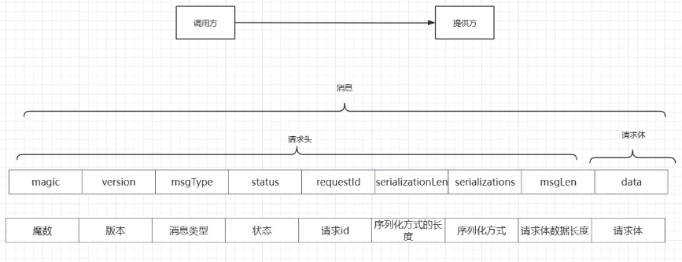

写个轮子，从设计到实现全过程参与，思考更多。
# zy-RPC
我的源码分享
参考
# Git 使用
虽然 git clone 过很多，但没怎么 push 过，本博客也是 hexo 代劳了相关操作。简单记录下
- 初始化
git init，初始化一次就好 git add .将项目上所有的文件添加到仓库中的意思，如果想添加某个特定的文件，只需把。换成这个特定的文件名即可git commit -m "first commit"，"" 内表示你对这次提交的注释，就是 github 上对应文件行中间的那个注释。此时是先提交到本地仓库（本地有才能 push）git remote add origin url，就是设置 clone 时的那个 https://xxx url 地址为远程仓库，也就是你的 git 项目仓库地址git push -u origin xxpush 到 origin（远程仓库的默认名，可改）的 xx 分支
1，4 第一次要设置，之后就是 add（idea 的话可以自动添加），commit，push 就好了
# 概念及架构
RPC（Remote Procedure Call）远程过程调用协议，是一个协议，具体落地自己实现。
RPC 和 HTTP 有什么区别呢？
- 场景：在微服务下，A 服务调用 B 服务（要数据）就是远程调用
- 意义：传统可以使用 http，但会有很多没必要的数据（协议头臃肿？），增加传输负担，降低速率，在服务和服务间有的数据响应的需求就可以通过自定义协议。
# 技术栈
- Spring Boot （实现自定义注解等）
- Netty（处理异步事件 —— 请求发送和结果接收），future、promise
- Zookeeper（注册中心）：Curator 类进行注册、发现等
- SPI
- 自定义协议、重试机制、容错机制、拦截
思考过程：
- 最简单就是服务 A（调用方）直接写死拿服务 B（提供方）
- 写死了修改麻烦，怎么自动呢？添加个注册中心后，先发现后调用
- 那万一提供方挂了，好比服务器宕机 —— 自然想到分布式，提供方也可以有多个，那就需要规划路由层处理（负载均衡）
- 我们知道进程通讯底层都是以字节流 / 字符串的形式进行数据传输，使用二进制而非传递对象。因此在路由选择后又应该有序列化处理
- 提供方也不该谁都可以调用，因此需要安全校验（token），也就是加拦截器，对其统一处理，又可以规划一个连接器链
- 此时我们从原始的（调用方、提供方），扩展到了（注册中心、调用方、路由层、序列化、拦截器、提供方）
- 是一个高耦合的整体，我们希望除了提供方和调用方都能解耦（双方使用都依赖一个公共模块即可快速对接）
- 那就是：SPI（类似 IOC 和 AOP），注册中心、路由层、序列化、拦截器都由 SPI 动态加载
- 某个提供方失败了也应该有处理方案，也就是要有容灾 / 容错机制来保证高可用
- 提供方不该同步提供服务吧？线程池
- 接口不能两个小组口头约定吧，再解耦，在公共依赖模块中还应该有一个接口包统一双方的使用。
- 但两者一个是针对 RPC 的模块，一个设计业务，而且业务可能变动频繁，RPC 大致定了就定了，因此还是再拆个业务模块出来，乃至于不同业务不同模块？好像又会很多，不知道实际开放中是怎样处理的
# 设计思路
根据需要，也就是上面的演变过程，设计了不同的包，同时除了调用方和提供方之外都可以用一个 SPI 模块处理，实现解耦。此外对于一些具体的功能要细分解耦，像代理中有包含初始化、和具体的操作，初始化里又有配置文件的加载、bean 初始化，这些都应该拆解到如注册中心初始化、序列化初始化等（工厂模式加载）。
# 注册中心
# Zookeeper
zookeeper 本来就是干这个的，虽然还能做 ” 存储配置信息，多点同步管理 / 分布式锁 / 集群管理 / 队列管理 / 限流计数 / 分布式数据一致性” 的功能，但最基本、常用的就是服务注册与发现。
当在服务器部署后在服务端简历 Client，两者通过 TCP 链接和心跳机制维护。
具体的可以用 CuratorFrameworkFactory 或 ZkClient 实现，可以指定节点的创建和销毁
public ZookeeperRegistry() throws Exception { | |
String registerAddr = RpcProperties.getInstance().getRegisterAddr(); | |
CuratorFramework client = CuratorFrameworkFactory.newClient(registerAddr, new ExponentialBackoffRetry(BASE_SLEEP_TIME_MS, MAX_RETRIES)); | |
client.start(); | |
JsonInstanceSerializer<ServiceMeta> serializer = new JsonInstanceSerializer<>(ServiceMeta.class); | |
this.serviceDiscovery = ServiceDiscoveryBuilder.builder(ServiceMeta.class) | |
.client(client) | |
.serializer(serializer) | |
.basePath(ZK_BASE_PATH) | |
.build(); | |
this.serviceDiscovery.start(); | |
} | |
@Override | |
public void register(ServiceMeta serviceMeta) throws Exception { | |
ServiceInstance<ServiceMeta> serviceInstance = ServiceInstance | |
.<ServiceMeta>builder() | |
.name(CommonMethod.getServiceKey(serviceMeta.getServiceName(), serviceMeta.getServiceVersion())) | |
.address(serviceMeta.getServiceAddr()) | |
.port(serviceMeta.getServicePort()) | |
.payload(serviceMeta) | |
.build(); | |
serviceDiscovery.registerService(serviceInstance); | |
} | |
@Override | |
public void unRegister(ServiceMeta serviceMeta) throws Exception { | |
ServiceInstance<ServiceMeta> serviceInstance = ServiceInstance | |
.<ServiceMeta>builder() | |
//.name (serviceMeta.getServiceName ()) // 跟上面不一样？ | |
.name(CommonMethod.getServiceKey(serviceMeta.getServiceName(), serviceMeta.getServiceVersion())) | |
.address(serviceMeta.getServiceAddr()) | |
.port(serviceMeta.getServicePort()) | |
.payload(serviceMeta) | |
.build(); | |
serviceDiscovery.unregisterService(serviceInstance); | |
} |
具体来说，ZooKeeper 客户端会定期向服务器发送 "ping" 请求，以维持会话的活跃状态。这些心跳 (设置的超时时间的一半发送) 消息帮助服务器检测客户端的连接状态，并确保会话在长时间无活动的情况下不会被关闭。
# Redis
相比 zookeeper 用 curator 包有完整的包装，redis 就是 key（服务），value（ip:port）记录信息，并做个定时器执行心跳任务
RedisRegistry(){ | |
RpcProperties properties = RpcProperties.getInstance(); | |
String[] split = properties.getRegisterAddr().split(":"); | |
JedisPoolConfig poolConfig = new JedisPoolConfig(); | |
poolConfig.setMaxTotal(20); // 设置最大连接数为 20，超过阻塞 | |
poolConfig.setMaxIdle(5); // 设置最大空闲连接数为 5，超过释放 | |
jedisPool = new JedisPool(poolConfig, split[0], Integer.parseInt(split[1])); | |
// 开启心跳 | |
executor = Executors.newSingleThreadScheduledExecutor(); | |
executor.scheduleWithFixedDelay(this::heartbeat, 5, 5, TimeUnit.SECONDS); | |
} | |
@Override | |
public void register(ServiceMeta serviceMeta) throws Exception { | |
String key = CommonMethod.getServiceKey(serviceMeta.getServiceName(), serviceMeta.getServiceVersion()); | |
if (!services.contains(key)) { | |
services.add(key); | |
} | |
serviceMeta.setUUID(this.UUID); | |
serviceMeta.setEndTime(new Date().getTime()+ttl); | |
Jedis jedis = getJedis(); | |
String script = "redis.call('RPUSH', KEYS[1], ARGV[1])\n" + | |
"redis.call('EXPIRE', KEYS[1], ARGV[2])"; | |
List<String> value = new ArrayList<>(); | |
value.add(JSON.toJSONString(serviceMeta)); | |
value.add(String.valueOf(10)); | |
jedis.eval(script,Collections.singletonList(key),value); | |
jedis.close(); | |
} |
# 路由层
根据负载均衡的算法算则提供的服务，提升高可用
- 用哈希增加节点的时候，会有影响
- 可以用确保一致性的哈希环
- 为了避免服务挂了，设计当前访问信息的时候还可以加个备用节点
- 轮询由调用方完成，内存自增就行了，而不是提供方处理
# 协议层
通信要定制好双方协议
包括安全校验、状态显示、传输过程可能出现的粘包半包问题的处理、序列化（多以工具类实现，根据需求选择即可）

- 魔数：可以安全校验
- 版本：协议版本
- 消息类型：请求 / 响应（最基本的）
- 状态：成功与否
- 请求 id：timeout、唯一性等处理
- 序列化方式长度：不像 int、long 等固定长
- 请求体的数据长度：处理粘包、半包问题
- 请求体：具体的请求内容
# 通讯处理
使用 Bootstrap，Bootstrap 是 Netty 提供的一个便利的工厂类，可以通过它来完成客户端或服务端的 Netty 初始化。
- ServerBootstrap 用于服务端
- Bootstrap 用于客户端
（1）EventLoopGroup：不论是服务端还是客户端，都必须指定 EventLoopGroup。在这个例子中，指定了 NioEventLoopGroup，表示一个 NIO 的 EventLoopGroup。
（2）ChannelType：指定 Channel 的类型。因为是客户端，所以使用了 NioSocketChannel。
（3）Handler：设置处理数据的 Handler
在 Netty 中，Channel 是一个 Socket 的抽象，它为用户提供了关于 Socket 状态 (是否是连 接还是断开) 以及对 Socket 的读写等操作。每当 Netty 建立了一个连接后，都会有一个对应 的 Channel 实例
- NioSocketChannel，代表异步的客户端 TCP Socket 连接 （this）
- NioServerSocketChannel，异步的服务器 Socket 连接
- NioDatagramChannel，异步的 UDP 连接 NioSctpChannel，异步的客户端 Sctp 连接
- NioSctpServerChannel，异步的 Sctp 服务器端连接
实例：
// 创建一个客户 / 服务端的引导类 | |
bootstrap = new Bootstrap(); | |
// 创建反应器轮询组，指定轮询的线程数 | |
eventLoopGroup = new NioEventLoopGroup(4); | |
// Bootstrap 是 Netty 提供的一个便利的工厂类，可以通过它来完成客户端或服务端的 Netty 初始化 | |
bootstrap.group(eventLoopGroup) // 并设置到 Bootstrap 引导类实例 | |
.channel(NioSocketChannel.class) // 设置通道的 IO 类型。Netty 不止支持 Java NIO，也支持阻塞式的 OIO。 | |
.option(ChannelOption.SO_KEEPALIVE, true) // 设置传输通道的配置选项，第二个表示是否开启 TCP 底层心跳机制，true 为开启，false 为关闭。 | |
.handler(new ChannelInitializer<SocketChannel>() { | |
@Override | |
protected void initChannel(SocketChannel socketChannel) throws Exception { | |
// 向子通道流水线添加一个 Handler 业务处理器 | |
socketChannel.pipeline() | |
.addLast(xxHandler) | |
} | |
}); | |
// 连接，通过调用 sync () 同步方法阻塞直到绑定成功 | |
ChannelFuture future = bootstrap.connect(ip, port).sync(); | |
// 写入数据 | |
future.channel().writeAndFlush(data); |
等待响应就是用 future，Future 表示一个可能还没有完成的异步任务的结果
Selector 在 Java NIO 中可以检测到一个或者多个 Channel，并能够知晓通道是否为诸如读写事件做好准备的组件。这样，一个单独的线程可以管理多个 Channel，从而管理多个网络连接。这样的单个线程管理管理多个 Channel 可以极大的减少线程间切换的开销。
也就是下面的 poller？
netty 是一款非阻塞框架，acceptor 接收请求，poller 起 select 的作用，像一个列车一样，把请求来回在 acceptor 和线程池之间传递，因为如果没有 poller，就不是 NIO 了而是传统的 BIO，NIO 的作用就是创建一个通道 channel，用这个通道来处理一堆请求。
netty 的实例化，需要启动两个 EventLoopGroup，一个用于处理客户端连接的事件，另一个用于处理客户端发送的数据的事件。
- Boss Group（老板组）： 负责处理客户端连接请求的事件。当客户端发起连接请求时，Boss Group 接收并处理这些连接请求，将连接分配给 Worker Group 中的一个 EventLoop 处理。
- Worker Group（工人组）： 负责处理客户端发送的数据的事件。一旦客户端的连接被接受，Worker Group 就会负责处理连接上的读写操作，处理数据的传输和处理逻辑。
使用两个 EventLoopGroup 的好处是可以将连接的接收和处理逻辑分开，提高了系统的并发处理能力和性能。Boss Group 负责接受连接请求并分发给 Worker Group 处理，Worker Group 负责处理连接上的读写操作，实现了连接的异步处理。
此外，使用两个 EventLoopGroup 还可以更好地控制线程池的大小，使得连接请求和数据处理的线程池能够根据实际情况进行灵活调整，提高了系统的灵活性和可维护性
# tips
一开始出现了客户端发送成功，服务端显示调用成功，但一直没回写的问题（因为 fireChannelRead 默认调用，channelRead0 是空的，以为都是托管的）。了解了 Netty 的如下机制后，知道了是没显式调用 writeAndFlush 回传。
fireChannelRead入站式的操作，会由 Netty 自己完成，但出站操作writeAndFlush要显示调用，因为 Netty 的 handle 是双向链表，添加后可以默认遍历执行入站，但是否出站，什么时候出站就不知道了。ChannelInboundHandler 依照 addLast 顺序执行，ChannelOutboundHandler 则是逆序执行。两者可按需求自由使用，其他方法无差别，就是顺序问题
在 Netty 中，服务端通常在 channelRead0 方法中使用 writeAndFlush 发送响应消息给客户端。而客户端通常会使用 Channel.writeAndFlush 来发送消息，并使用 ChannelFuture 来获取异步结果。
服务端通常不需要显式地等待消息发送完成，因为 writeAndFlush 是异步的。但是，如果服务端确实需要在消息发送完成后执行一些操作，也可以向 ChannelFuture 添加监听器来处理。
# 可能存在的问题
现象分析
粘包
- 现象，发送 abc def，接收 abcdef
- 原因
- 应用层：接收方 ByteBuf 设置太大（Netty 默认 1024）
- 滑动窗口：假设发送方 256 bytes 表示一个完整报文，但由于接收方处理不及时且窗口大小足够大，这 256 bytes 字节就会缓冲在接收方的滑动窗口中，当滑动窗口中缓冲了多个报文就会粘包
- Nagle 算法： TCP 协议如果发送的网络数据包太小，那么他本身会启用 Nagle 算法（可配置是否启用）对较小的数据包进行合并
举个例子理解：
假设客户端分别发送了两个数据包 D1 和 D2 给服务端，由于服务端一次读取到的字节数是不确定的，故可能存在以下 4 种情况。
- 服务端分两次读取到了两个独立的数据包，分别是 D1 和 D2，没有粘包和拆包；
- 服务端一次接收到了两个数据包，D1 和 D2 粘合在一起，被称为 TCP 粘包；
- 服务端分两次读取到了两个数据包，第一次读取到了完整的 D1 包和 D2 包的部分内容，第二次读取到了 D2 包的剩余内容，这被称为 TCP 拆包；
- 服务端分两次读取到了两个数据包，第一次读取到了 D1 包的部分内容 D1_1，第二次读取到了 D1 包的剩余内容 D1_2 和 D2 包的整包。
如果此时服务端 TCP 接收滑窗非常小，而数据包 D1 和 D2 比较大，很有可能会发生第五种可能，即服务端分多次才能将 D1 和 D2 包接收完全，期间发生多次拆包。
半 / 拆包
- 现象，发送 abcdef，接收 abc def
- 原因
- 应用层：接收方 ByteBuf 小于实际发送数据量
- 滑动窗口：假设接收方的窗口只剩了 128 bytes，发送方的报文大小是 256 bytes，这时放不下了，只能先发送前 128 bytes，等待 ack 后才能发送剩余部分，这就造成了半包
- MSS 限制：当发送的数据超过 MSS 限制后，会将数据切分发送，就会造成半包。MSS 是 TCP 报文段中的数据字段的最大长度。数据字段加上 TCP 首部才等于整个的 TCP 报文段。所以 MSS 并不是 TCP 报文段的最大长度，而是：MSS=TCP 报文段长度 - TCP 首部长
本质是因为 TCP 是流式协议，消息无边界
解决方案
自定义协议有协议长度 + 数据长度，结合 buff 缓冲
具体代码在 RpcDecoder 类的 decode 方法中
// 如果可读字节数少于协议头长度，说明还没有接收完整个协议头，直接返回 | |
if (byteBuf.readableBytes() < ProtocolConstants.HEADER_TOTAL_LEN) { | |
return; | |
} | |
// 标记当前读取位置，便于后面回退 | |
byteBuf.markReaderIndex(); | |
// ... | |
// 读取消息体长度 | |
int dataLength = byteBuf.readInt(); | |
// 如果可读字节数小于消息体长度，说明还没有接收完整个消息体，回退并返回。 半包问题 | |
if (byteBuf.readableBytes() < dataLength) { | |
// 回退标记位置 | |
byteBuf.resetReaderIndex(); | |
return;} | |
byte[] data = new byte[dataLength]; | |
// 读取数据 | |
byteBuf.readBytes(data); |
粘包会正常读取，但会导致下一个变成半包，变相解决粘包
# 拦截层
在服务发送前后和服务接受前后通过一个 filter 链（filter LIst，责任链设计模式）可以进行一系列的增强操作。可以实现如 限流（加锁 + 释放锁）等
# SPI
使用 SPI 后对于整个程序的拓展性有了极大的提升。
- 制定好接口规范协议后，其他服务按照你制定好的服务协议。随后使用 SPI 进行可插拔方式来加载不同的类。
- 例如：jdbcl 驱动，我先制定好一个协议，我不管你是什么 sql 厂商，你都遵循我的协议来，然后我使用 spi 机制来进行加载类就行。
- java 中 ServiceLoader 的懒加载、Spring MVC、Spring Boot 的装配等等都是该思想
通过 SPI 机制（配置文件中也是 key，value 的格式）去按需加载 bean，类名加载到 Map，调用的时候若没有再初始化，并没有直接打破双亲委派机制，而是在双亲委派机制之上提供了一种动态加载服务实现类的方式。
它通过在指定的路径下的 META-INF/services 目录中的配置文件中列出服务接口的实现类，然后通过 ServiceLoader 类在运行时动态加载这些实现类。这样的机制使得服务接口的实现类可以由不同的类加载器加载，而不受双亲委派机制的限制
# 容错层 （高可用）
在服务提供方发生错误时 (无法提供服务)，此时有可能还会有其他服务能提供，因此还需要尝试找其他服务。
- 硬编码：在发送方的代理类方法中，catch 里直接写相应的措施
- 抽离出来，同样可以用 SPI 那套解决
内容不多，重点是设计架构时的思维，见 RpcInvokerProxy 的 invoke 中，偷懒硬编码了
# 并发处理 （高并发）
对于某一具体的提供方，当处理多请求时，同步就效率太低了。可以加入个线程池进行异步处理。还可以结合拒绝策略，自定义某个返回状态，让调用方换个提供方。
具体的在 ThreadPoolFactory 类的 submitRequest 方法中，使用了快慢线程池
- 线程池固定大小，如果什么任务都丢到同一个线程池中，万一正好线程执行的都是长时间的任务，那又会堆积任务了。大体分为快慢池处理吧，默认快池，处理时间高于阈值的存进 map，下次就丢进慢池。
同时用个单线程的延迟任务定期清理 map，毕竟人可以一直倒霉，服务总不会一直慢吧
Executors.newSingleThreadScheduledExecutor().scheduleWithFixedDelay(()->{ | |
slowTaskMap.clear(); | |
},5,5,TimeUnit.MINUTES); |
# 一些代码 tips
- Spring 在一些
@Enablexx注解中，往往 import 某个想被执行的类。通过该方式就可以替换掉 “使用反射应用配置文件” 的模式。比如设置个自定义注解EnableConsumerRpc@Import(ConsumerPostProcessor.class)，在 ConsumerPostProcessor 实现BeanPostProcessor, EnvironmentAware, InitializingBean从而实现环境配置、初始化一些 bean、代理层注入的操作。在 Consumer 的 main 使用EnableConsumerRpc注解就完成了相关配置。
# 待处理
- PropertiesUtils 读取配置的方法还没吃透
# 思考
本地不适用注册时指定通信 ok，调试服务器 zookeeper 时注册成功了，提供方显示调用成功，但调用方显示调用失败（连接成功，通信了）
java.util.concurrent.TimeoutException5000 MILLISECONDS 超时了，增加到 10 s 还是超时，不是服务器慢？然而从打印的结果，确实是从发送请求到报异常是 10s，超时错没问题。但 provider 不到 20ms 就响应了。只能是结果未能正常返回，排查下 provider 看下。- 破案了，
socketChannel Handle中最后一步操作是ChannelHandlerContext.writeAndFlush()客户端中单独做了个 sendRequest 方法来实现，而服务端，参考别人写的，其实是写在了一个独立的后置处理中（因为不是主体业务一直没实现），没发现回传被绑定在这了，从而一直没实现服务端对 future 的响应...... 之前确实没接触，流程还是不完善，应该是从小往外的过程（迭代），而所谓的预设框架（学别人的）有点纰漏就会出问题。没毛病，自己写了个writeAndFlush搞定
- 破案了，
consumer 中断后 provider 显示强制关闭了一个现有连接，不应该是调用完自动断开了吗？
对于调用和提供方都还是需要依赖 RPC 模块（架构独立出来），跑一下 Rpc 打包成 jar 包双方也独立出来能不能跑？模拟实际开发互不可见的情况；√成了，但是中间遇到了依赖打包的问题。
第一次特别慢。客户端连接 zookeeper 慢。解决
漏洞？requestId 用的 AtomicLong 自增， 那对于多个调用方，自增 id 不就可能一样？不一定影响使用，但数据不规范，还是需要一个中转？那不又成了 CS 模式
final byte[] serialization为什么直接用 final 修饰？（被初始化赋值之后，就不能再被赋值了。有偏颇，虽然不能再指向其他对象，但是它指向的对象的内容是可变的。引用类型是这样，基本数据类型就是定值）这个只是指定序列化方法（json 或者别的），不是对内容进行序列化。很多地方有无 final 测试下高性能如何做到呢？
在 postProcessAfterInitialization 中每个每个服务都注册了一个 RegistryService？不对，用的 SpiLoader.getInstance ().get (registryService); 始终是一个管理
远程连接每次都是新开不会自动关闭，（打开的文件、数据库连接）等需要手动，其他由线程池开启的任务，通过定期释放线程池？Handler 说是会自动释放，但关闭程序还是会显现失去连接
# 扩展
- 目前实现的服务查询方法都直接调用 ZooKeeper。 如果经常查询服务，还可以使用 ServiceCache
- 开源的高性能 RPC 框架 ——Dubbo
- 打包依赖问题
# 面试问题
- 在项目中使用了代理设计模式来简化用户调用流程，请解释一下代理设计模式在该项目中的具体应用和优势。
- 代理设计模式可以简化用户逻辑，将实现细节交还给开发者。像 Mybatis 的 Mapper 层也是一样（解析参数、连接数据库等一些列操作进行了封装）。具体的又有动态（jdk 和 xx）、静态，回看 java 笔记
- 项目中提到支持多种序列化方式，例如 Hessian 和 json，请说明在选择序列化方式时需要考虑哪些因素并举例说明不同序列化方式的适用场景。
两个进程之间通信（无论同不同主机，采用何种管道（Pipes）、消息队列（Message Queues）、共享内存（Shared Memory）、信号量（Semaphores）、套接字（Sockets））底层都是以字节流 / 字符串的形式进行数据传输，使用二进制而非传递对象。
选择 Hessian 还是 JSON 序列化取决于具体的应用场景和需求。如果你需要高效的网络通信、跨语言支持，并且可以接受一定的可读性差，那么可以选择 Hessian。如果你更看重可读性（语法结构简单清晰，采用了键值对的形式）、通用性和浏览器端的适用性，那么 JSON 可能更适合你的需求。我们希望服务之间是尽快响应的，不像一个外部请求那样需要可读性，因此最后选择 Hessian。
- 你可以详细解释一下项目中使用的序列化机制的选择和实现方式，并说明在实际应用中如何评估和选择合适的序列化方式。
- 就是上面的区别，根据需求，实现的话就是官网拉取一个实现类，有固定的模板，并没有做这方面创新
- 你可以详细解释一下项目中使用的负载均衡算法的选择和实现方式，并说明在实际应用中如何评估和调整负载均衡策略。
- 轮询：
- 一致性哈希：比取余哈希，更均匀分布、灵活性、故障恢复能力、降低数据迁移成本和简化管理等优点
- 实际应用：根据服务器不同的负载能力而选择策略
- 你可以详细解释一下在使用 Zookeeper 和 Redis 作为注册中心时，它们各自的作用和优势是什么，并举例说明它们在该项目中的具体应用。
- Zookeeper：有临时节点和私有节点，服务下线后，临时节点也关闭。
- Redis：要不断轮询，对服务续签 / 解除。
- 除了注册和修改的差异，前者有监听，后者没那么好实现。拿取都是从缓存中。因此在很稳定的服务情景可以选择 Redis，但需要频繁调整的，比如有个更新服务器临时下线等，还是 Zookeeper 好用
在负载均衡策略中，你提到了轮询和一致性哈希算法，请解释一下这两种算法的原理和适用场景，并说明在该项目中如何实现这些负载均衡策略。（问题 4）
容错机制在分布式系统中非常重要，请详细说明在该项目中引入的容错机制是如何工作的，并举例说明它们如何提高系统的健壮性和可用性。
- 如 a、b、c 报错，通常来说不是在业务层面，因为业务逻辑一致，这出问题了都会挂。更多是某个服务宕机、超时了，这个时候我们需要有故障转移。某个提供不了服务可以转到别的，保证健壮性和可用性。但也不能一致转移导致死循环，因此设计了一个最大重试次数。具体的看业务场景，如果不重要，比如一些日志记录，那就可以直接 fastfail。
- 拦截器层在该项目中被用来实现哪些功能？请列举一些常见的拦截器类型，并解释它们的作用和如何实现。
- 双方之间安全校验 - token 拦截器
- 限流操作，加锁，释放锁（前置和后置）
- 在项目中引入了拦截器层，请解释一下在该项目中如何定义和使用拦截器，并说明拦截器在系统中的执行顺序和作用。
- SPI 的机制、来加载拦截器，遵顼规则统一加载。并写了个拦截器链统一进行拦截器处理。
- 顺序就是服务、客服端业务的前后
- SPI 层在该项目中被用作基础架构，请解释一下系统 SPI 和用户 SPI 的区别和作用，并说明它们在项目中的具体应用场景。
- 系统 SPI：系统 bean 统一加载管理
- 用户 SPI：对于自定义的一些增强的功能，
- 所有的模块、像代理设计模式、注册中心、序列化、负载均衡、容错机制等都可以通过 SPI 选择加载，将 key-value 写在配置文件里
- 在项目中使用了 SPI 层来实现高拓展性，请说明一下在该项目中如何定义和使用 SPI 接口，并解释一下 SPI 的工作原理和实现方式。
- SPI 是 java 提供服务发现的一个机制，和 new 不同，需要配置文件 key-value，使用对应的语法去加载对应的类，JavaSE 是都加载，我们只是按需加载。
- ServiceLoader 可以继续扩展，打破了 java 类的双亲委派机制，属于更上层的，用户类加载不到，但是读取了上下文去加载
- 双亲委派机制是 Java 类加载器的一种重要原则，它指的是当一个类加载器收到加载类的请求时，首先将加载任务委派给其父类加载器完成，只有在父类加载器无法完成加载任务时，子类加载器才会尝试自己加载。这样的机制保证了类的唯一性和类加载的一致性。
- SPI 机制并没有直接打破双亲委派机制，而是在双亲委派机制之上提供了一种动态加载服务实现类的方式。它通过在指定的路径下的
META-INF/services目录中的配置文件中列出服务接口的实现类，然后通过ServiceLoader类在运行时动态加载这些实现类。这样的机制使得服务接口的实现类可以由不同的类加载器加载，而不受双亲委派机制的限制
- Netty 在该项目中被用作什么角色？请解释一下 Netty 的主要特点和优势，并说明在该项目中为什么选择 Netty 作为网络通信框架。
- 本来是 socket，但较为复杂，具有高性能（多路复用、零拷贝、内存池、多线程），可以处理大量的并发连接和高吞吐量的数据传输。
- 异步非阻塞，Java Socket 则是同步阻塞的模型，每个连接都需要占用一个线程，当连接数增加时，会导致线程资源的浪费和系统性能下降
- 基于事件驱动的模型。EventLoop，事件循环负责处理所有的 I/O 事件，包括接收连接、读取数据、写入数据等。Netty 通常会有多个事件循环，每个事件循环运行在一个单独的线程中。
- 使用 Java NIO（New I/O）提供了非阻塞的 I/O 操作，这意味着当一个 I/O 操作不能立即完成时，线程不会被阻塞，而是会继续处理其他任务或事件。当 I/O 操作完成时，Netty 会通知事件循环，并将结果返回给调用方。
- 回调、Selector 负责监视多个通道的状态，并在通道就绪时通知事件循环。
- Java Socket 主要支持 TCP 和 UDP，Netty 支持多种网络协议的实现，包括 TCP、UDP、HTTP、WebSocket 等
- 你在项目中提到了自定义传输协议数据格式，请详细解释一下自定义传输协议的设计思路和实现方式，并说明为什么选择自定义传输协议。
- 为什么：进程之间数据传输，要指定好格式，如果不指定的话，接收方如何确定是否是调用方发送而不是别的，以及如何获取到消息、解读。还可以解决粘包问题。
- 魔数：安全校验；数据类型：请求还是响应，确定业务类型；状态：发送 / 返回的成功 / 失败；ID；序列化方式和长度；数据长度
- 项目中使用了 Spring Boot 的自动装配机制，请解释一下自动装配的原理和工作方式，并说明在该项目中如何利用自动装配来简化配置过程。
- 注解的方式，import () 来加载
- 你在项目中提到了高拓展性，请解释一下在该项目中如何实现高拓展性，并举例说明用户如何根据配置策略引入和替换模块。
- SPI 统一管理模块。比如用户加了个注册中心，在 key 和 value 加上，SPI 去找，对应上了就会加载
- 项目中提到了重试策略，请解释一下在该项目中如何实现重试策略，并说明如何避免重试导致的潜在问题，例如请求重复执行等。
- 如何保证幂等性，提供方要实现幂等性、唯一索引、或者 redis 去重（UUID）
- 请说明一下在该项目中遇到的主要挑战和问题，并解释你是如何解决这些挑战和问题的
- 一开始没用 SPI，后续发现扩展行为就比较麻烦，参考了 dubbo
- zookeeper 作为注册中心遇到的问题
- redis 自己实现，服务发现、更新等。每个服务自身续签的时候还要轮询别的服务并删除
- 实现的 rpc 跟 dubbo 有什么区别，为什么不用 dubbo 要用这个 rpc？
- 更轻量化，实现基本的服务调用
如果把 rpc 改成分布式架构，应该怎么改 ，哪一部分要改成分本式？注册中心改成分布式，客户端的接口的幂等性和多个分布式注册中心之间的数据一致性怎么保证或者平衡？心跳检测是在一个单线程定时器里，这一部分要不要分布式一下？
服务端节点应该怎么优雅地上下线？客户端什么时候会拉取最新的服务节点？拉取的是所有的服务节点还是部分服务节点？为什么？
客户端和服务端的定时器的区别？
rpc 为什么要基于 tcp？能不能用 udp？该怎么改或者定怎样的传输协议，可靠性传输相关的要不要考虑一下？
能不能在除了 rpc 的应用层，在别的层（比如传输层和网络层）做负载均衡？大概该怎么做？
# 这是分界线，最终实现是上面的，下面的是学习过程中整理的
一些内容可能有偏颇，因为当时学的还不深入，参考项目也是别的，如果是也想学习一个 RPC 看上面就好，下面的仅自我留档，不用管
# 概念
RPC（Remote Procedure Call）远程过程调用协议，一种通过网络从远程计算机上请求服务，而不需要了解底层网络技术的协议。RPC 它假定某些协议的存在，例如 TPC/UDP 等，为通信程序之间携带信息数据。在 OSI 网络七层模型中，RPC 跨越了传输层和应用层，RPC 使得开发，包括网络分布式多程序在内的应用程序更加容易。
过程是什么？ 过程就是业务处理、计算任务，更直白的说，就是程序，就是想调用本地方法一样调用远程的过程。可以让客户端直接调用服务端方法就像调用本地方法一样简单的框架，比如 Dubbo、Motan、gRPC 这些。 如果需要和 HTTP 协议打交道，解析和封装 HTTP 请求和响应。这类框架并不能算是 “RPC 框架”，比如 Feign。
入门参考
实现参考 1
实现参考 2
一个最简单的 RPC 框架使用示意图如下图所示：
RPC 框架一般必须包含三个组件，分别是客户端、服务端以及注册中心，一次完整的 RPC 调用流程一般为：
- 服务端启动服务后，将他提供的服务列表发布到注册中心（服务注册）；
- 客户端会向注册中心订阅相关的服务地址（服务订阅）；
- 客户端通常会利用本地代理模块 Proxy 向服务端发起远程过程调用，Proxy 负责将调用的方法、参数等数据转化为网络字节流；
- 客户端从服务列表中根据负载均衡策略选择一个服务地址，并将数据通过网络发送给服务端；
- 服务端得到数据后，调用对应的服务，然后将结果通过网络返回给客户端。
# 和 MQ 的区别
主要使用场景的区别，如下： （现在觉得不全对，提供方也可以用线程池实现内部调用的异步，也没有规定调用方不能用吧）
MQ 适用于 消息上游 与 下游 解耦，不关注下游执行结果，异步；
RPC 适用于 消息上游 关注下游执行结果，同步；
解释下 同步和异步：
同步是指所有的操作都做完，才返回给用户。 异步是指 将用户请求放入消息队列，并反馈给用户，然后程序再去执行操作。
同步就相当于是 当客户端发送请求给服务端，在等待服务端响应的请求时，客户端不做其他的事情。当服务端做完了才返回到客户端。这样的话客户端需要一直等待。用户使用起来会有不友好。
异步就是，当客户端发送给服务端请求时，在等待服务端响应的时候，客户端可以做其他的事情，这样节约了时间，提高了效率。
话是这么摘过来的，但该小节也有 RPC 异步的操作，感觉不是这么靠这个分开。MQ 更解耦一些。通过消息队列能处理更多的请求，之前自己阿里服务器开了个 RocketMQ 确实响应要几秒，适合大量非即时的需求，小量即时的 RPC 应该更适合？但耦合度高？其实也通过模块分离、中间层接口进行了解耦
# 框架思路
一般情况下， RPC 框架不仅要提供服务发现功能，还要提供负载均衡、容错等功能，这样的 RPC 框架才算真正合格的
简单说一下设计一个最基本的 RPC 框架的思路：

- 注册中心 ：注册中心首先是要有的，推荐使用 Zookeeper。注册中心负责服务地址的注册与查找，相当于目录服务。服务端启动的时候将服务名称及其对应的地址 (ip+port) 注册到注册中心，服务消费端根据服务名称找到对应的服务地址。有了服务地址之后，服务消费端就可以通过网络请求服务端了。
- 网络传输 ：既然要调用远程的方法就要发请求，请求中至少要包含你调用的类名、方法名以及相关参数吧！推荐基于 NIO 的 Netty 框架。
- 序列化 ：既然涉及到网络传输就一定涉及到序列化，你不可能直接使用 JDK 自带的序列化吧！JDK 自带的序列化效率低并且有安全漏洞。 所以，你还要考虑使用哪种序列化协议，比较常用的有 hession2、kyro、protostuff。
- 动态代理 ： 另外，动态代理也是需要的。因为 RPC 的主要目的就是让我们调用远程方法像调用本地方法一样简单，使用动态代理可以屏蔽远程方法调用的细节比如网络传输。也就是说当你调用远程方法的时候，实际会通过代理对象来传输网络请求，不然的话，怎么可能直接就调用到远程方法呢？
- 负载均衡 ：负载均衡也是需要的。为啥？举个例子我们的系统中的某个服务的访问量特别大，我们将这个服务部署在了多台服务器上，当客户端发起请求的时候，多台服务器都可以处理这个请求。那么，如何正确选择处理该请求的服务器就很关键。假如，你就要一台服务器来处理该服务的请求，那该服务部署在多台服务器的意义就不复存在了。负载均衡就是为了避免单个服务器响应同一请求，容易造成服务器宕机、崩溃等问题，我们从负载均衡的这四个字就能明显感受到它的意义。
# 目标和内容
实现基于 Netty + Zookeeper + SpringBoot 实现的自定义 RPC 框架。同时引入其他通信协议，有 Http、Socket 等，注册中心引入了 Zookeeper、Nacos、Eureka 等。基于 JMH 压测在 10000 并发量下的吞吐量在 29300 上下。
# 依赖知识
# ZooKeeper
ZooKeeper 是一个分布式的，开放源码的分布式应用程序协同服务。ZooKeeper 的设计目标是将那些复杂且容易出错的分布式一致性服务封装起来，构成一个高效可靠的原语集，并以一系列简单易用的接口提供给用户使用。
# 功能
- 配置管理（configuration management）：如果我们做普通的 Java 应用，一般配置项就是一个本地的配置文件，如果是微服务系统，各个独立服务都要使用集中化的配置管理，这个时候就需要 ZooKeeper。需要的时候直接拉取，这样可以大大节约维护的成本。
- DNS 服务
- 集群管理：zookeeper 作为注册中心，管理服务提供方的 ip 地址端口号 url 信息，并在服务消费方请求需要时发送给服务消费方，RPC 就是用这个
- 各种分布式锁：在多个用户访问同一台主机上的应用程序数据时，可以通过加锁解决并发操作。但是如果有多台主机相同的应用程序要访问同一数据时，这个时候在一台主机上加锁是不能解决另一台主机的并发问题的 ，这个时候就需要分布式锁解决这类问题。可以抽象理解分布式锁像是从所有主机中抽取出来的一把锁，或者是有一把总锁对所有主机都有效。
# 测试连接
安装就随意找教程了
@Before | |
public void before() { | |
// 参数 1 --> zk server 服务 ip 地址：端口号 | |
// 参数 2 --> 会话超时时间 | |
// 参数 3 --> 连接超时时间 | |
// 参数 4 --> 序列化方式 | |
zkClient = new ZkClient("开启zookeeper的服务器ip:2181", 60000 * 30, 60000, new SerializableSerializer()); | |
} | |
private ZkClient zkClient; | |
@Test | |
public void test01(){ | |
System.out.println(zkClient); | |
} | |
@After | |
public void after() { | |
zkClient.close(); | |
} |
服务器上 start 启动后可以监听到
log4j:WARN Please initialize the log4j system properly. | |
log4j:WARN See http://logging.apache.org/log4j/1.2/faq.html#noconfig for more info. | |
org.I0Itec.zkclient.ZkClient@150c158 # 有了就成功 |
# Netty
- Netty 是一个基于 NIO 的 client-server (客户端服务器) 框架，使用它可以快速简单地开发网络应用程序。
- Netty 极大地简化并优化了 TCP 和 UDP 套接字服务器等网络编程，并且性能以及安全性等很多方面都要更好。
- Netty 支持多种协议 如 FTP，SMTP，HTTP 以及各种二进制和基于文本的传统协议。本文所要写的 HTTP Server 就得益于 Netty 对 HTTP 协议（超文本传输协议）的支持。
首先要明确的是 Netty 主要用来做网络通信 。
- 实现框架的网络通信模块 ： Netty 几乎满足任何场景的网络通信需求，因此，框架的网络通信模块可以基于 Netty 来做。拿 RPC 框架来说！ 我们在分布式系统中，不同服务节点之间经常需要相互调用，这个时候就需要 RPC 框架了。不同服务指点的通信是如何做的呢？那就可以使用 Netty 来做了！比如我调用另外一个节点的方法的话，至少是要让对方知道我调用的是哪个类中的哪个方法以及相关参数吧！
- 实现一个自己的 HTTP 服务器 ：通过 Netty ，我们可以很方便地使用少量代码实现一个简单的 HTTP 服务器。Netty 自带了编解码器和消息聚合器，为我们开发节省了很多事！
- 实现一个即时通讯系统 ： 使用 Netty 我们可以实现一个可以聊天类似微信的即时通讯系统，这方面的开源项目还蛮多的，可以自行去 Github 找一找。
- 实现消息推送系统 ：市面上有很多消息推送系统都是基于 Netty 来做的。
- ......
# 消息协议、编解码
# 消息协议
客户端在向服务端发起调用之前，需要考虑采用何种方式将调用信息进行编码，并传输到服务端。出于对性能的考量，通信协议应该越简单越好，这样可以减少编解码的性能损耗。
大部分主流 RPC 框架会选择 TCP、HTTP 协议，出名的 gRPC 框架使用的则是 HTTP2。TCP、HTTP、HTTP2 都是稳定可靠的，但其实使用 UDP 协议也是可以的，具体看业务使用的场景。成熟的 RPC 框架如阿里开源的 Dubbo 支持各种协议。
# 自定义协议
自定义协议的要素：
- 魔数，用来在第一时间判定是否是无效数据包
- 快速 识别字节流是否是程序能够处理的，能处理才进行后面的 耗时 业务操作，如果不能处理，尽快执行失败，断开连接等操作。
- 版本号，可以支持协议的升级
- 序列化算法，消息正文到底采用哪种序列化反序列化方式，可以由此扩展，例如：json、protobuf、hessian、jdk、kryo
- 指令类型，是登录、注册、单聊、群聊... 跟业务相关
- 请求序号，为了双工通信，提供异步能力，通过这个请求 ID 将响应关联起来，也可以通过请求 ID 做链路追踪。
- 正文长度，标注传输数据内容的长度，用于判断是否是一个完整的数据包
- 消息正文，主要传递的消息内容
简单的通信协议设计（之后默认用这个展开）
--------------------------------------------------------------------- | |
| 魔数 (4byte) | 版本号 (1byte) | 序列化算法 (1byte) | 消息类型 (1byte) | | |
------------------------------------------------------------------- | |
| 状态类型 (1byte) | 消息序列号 (4byte) | 消息长度 (4byte) | | |
--------------------------------------------------------------------- | |
| 消息内容 (不固定) | | |
--------------------------------------------------------------------- |
# 编解码
在 netty 中我们需要传递各种类型的消息，这些 message 可以是字符串，可以是数组，也可以是自定义的对象。不同的对象之间可能需要互相转换，这样就需要一个可以自由进行转换的转换器，为了统一编码规则和方便用户的扩展，netty 提供了一套消息之间进行转换的框架： io.netty.handler.codec.MessageToMessageCodec ，这个类是一个用于动态编 / 解码消息的编解码器，这可以看作是 MessageToMessageDecoder 和 MessageToMessageEncoder 的组合。这个类中有两个方法， encode() 就是将输入的 RpcMessage 编码成 ByteBuf ， decode() 就是将 ByteBuf 解码成 RpcMessage ，编码为出站操作，解码为入站操作。
# netty 源码
稍微深入了解下源码
netty 为消息和消息之间的转换提供了三个类，这三个类都是抽象类，分别是 MessageToMessageDecoder,MessageToMessageEncoder 和 MessageToMessageCodec。
- MessageToMessageEncoder 继承自 ChannelOutboundHandlerAdapter，负责向 channel 中写消息
- MessageToMessageDecoder 继承自 ChannelInboundHandlerAdapter，负责从 channel 中读取消息
- MessageToMessageCodec 继承自 ChannelDuplexHandler，它是一个双向的 handler，可以从 channel 中读取消息，也可以向 channel 中写入消息
先看一下消息的编码器 MessageToMessageEncoder，编码器中最重要的方法就是 write, 看下 write 的实现：
public void write(ChannelHandlerContext ctx, Object msg, ChannelPromise promise) throws Exception { | |
CodecOutputList out = null; | |
try { | |
if (acceptOutboundMessage(msg)) { | |
out = CodecOutputList.newInstance(); | |
@SuppressWarnings("unchecked") | |
I cast = (I) msg; | |
try { | |
encode(ctx, cast, out); | |
} finally { | |
ReferenceCountUtil.release(cast); | |
} | |
if (out.isEmpty()) { | |
throw new EncoderException( | |
StringUtil.simpleClassName(this) + " must produce at least one message."); | |
} | |
} else { | |
ctx.write(msg, promise); | |
} | |
} catch (EncoderException e) { | |
throw e; | |
} catch (Throwable t) { | |
throw new EncoderException(t); | |
} finally { | |
if (out != null) { | |
try { | |
final int sizeMinusOne = out.size() - 1; | |
if (sizeMinusOne == 0) { | |
ctx.write(out.getUnsafe(0), promise); | |
} else if (sizeMinusOne > 0) { | |
if (promise == ctx.voidPromise()) { | |
writeVoidPromise(ctx, out); | |
} else { | |
writePromiseCombiner(ctx, out, promise); | |
} | |
} | |
} finally { | |
out.recycle(); | |
} | |
} | |
} | |
} |
write 方法接受一个需要转换的原始对象 msg，和一个表示 channel 读写进度的 ChannelPromise。首先会对 msg 进行一个类型判断，这个判断方法是在 acceptOutboundMessage 中实现的。
public boolean acceptOutboundMessage(Object msg) throws Exception { | |
return matcher.match(msg); | |
} |
这里的 matcher 是一个 TypeParameterMatcher 对象，它是一个在 MessageToMessageEncoder 构造函数中初始化的属性：
protected MessageToMessageEncoder() { | |
matcher = TypeParameterMatcher.find(this, MessageToMessageEncoder.class, "I"); | |
} |
这里的 I 就是要匹配的 msg 类型。
如果不匹配，则继续调用 ctx.write(msg, promise); 将消息不做任何转换的写入到 channel 中，供下一个 handler 调用。
如果匹配成功，则会调用核心的 encode 方法: encode(ctx, cast, out);
注意，encode 方法在 MessageToMessageEncoder 中是一个抽象方法，需要用户在继承类中自行扩展。
encode 方法实际上是将 msg 对象转换成为要转换的对象，然后添加到 out 中。这个 out 是一个 list 对象，具体而言是一个 CodecOutputList 对象，作为一个 list，out 是一个可以存储多个对象的列表。
那么 out 是什么时候写入到 channel 中去的呢？
- 在 write 方法中最后有一个 finally 代码块，在这个代码块中，会将 out 写入到 channel 里面。
和 encoder 对应的就是 decoder 了，MessageToMessageDecoder 的逻辑和 MessageToMessageEncoder 差不多。
除了也需要判断读取的消息类型，decoder 中重要的方法是 channelRead 方法，我们看下它的实现：
public void channelRead(ChannelHandlerContext ctx, Object msg) throws Exception { | |
CodecOutputList out = CodecOutputList.newInstance(); | |
try { | |
if (acceptInboundMessage(msg)) { | |
@SuppressWarnings("unchecked") | |
I cast = (I) msg; | |
try { | |
decode(ctx, cast, out); | |
} finally { | |
ReferenceCountUtil.release(cast); | |
} | |
} else { | |
out.add(msg); | |
} | |
} catch (DecoderException e) { | |
throw e; | |
} catch (Exception e) { | |
throw new DecoderException(e); | |
} finally { | |
try { | |
int size = out.size(); | |
for (int i = 0; i < size; i++) { | |
ctx.fireChannelRead(out.getUnsafe(i)); | |
} | |
} finally { | |
out.recycle(); | |
} | |
} | |
} |
在 finally 代码块中将 out 中的对象一个个取出来，调用 ctx.fireChannelRead 进行读取。
结合两者有 MessageToMessageCodec，也是我们需要继承并重写其 encoder 和 decoder 操作的
public abstract class MessageToMessageCodec<INBOUND_IN, OUTBOUND_IN> extends ChannelDuplexHandler { | |
private final MessageToMessageEncoder<Object> encoder; | |
private final MessageToMessageDecoder<Object> decoder; | |
private final TypeParameterMatcher inboundMsgMatcher; | |
private final TypeParameterMatcher outboundMsgMatcher; | |
protected MessageToMessageCodec() { | |
this.encoder = new NamelessClass_2(); | |
this.decoder = new NamelessClass_1(); | |
this.inboundMsgMatcher = TypeParameterMatcher.find(this, MessageToMessageCodec.class, "INBOUND_IN"); | |
this.outboundMsgMatcher = TypeParameterMatcher.find(this, MessageToMessageCodec.class, "OUTBOUND_IN"); | |
} | |
protected MessageToMessageCodec(Class<? extends INBOUND_IN> inboundMessageType, Class<? extends OUTBOUND_IN> outboundMessageType) { | |
class NamelessClass_2 extends MessageToMessageEncoder<Object> { | |
NamelessClass_2() { | |
} | |
public boolean acceptOutboundMessage(Object msg) throws Exception { | |
return MessageToMessageCodec.this.acceptOutboundMessage(msg); | |
} | |
protected void encode(ChannelHandlerContext ctx, Object msg, List<Object> out) throws Exception { | |
MessageToMessageCodec.this.encode(ctx, msg, out); | |
} | |
} | |
this.encoder = new NamelessClass_2(); | |
class NamelessClass_1 extends MessageToMessageDecoder<Object> { | |
NamelessClass_1() { | |
} | |
public boolean acceptInboundMessage(Object msg) throws Exception { | |
return MessageToMessageCodec.this.acceptInboundMessage(msg); | |
} | |
protected void decode(ChannelHandlerContext ctx, Object msg, List<Object> out) throws Exception { | |
MessageToMessageCodec.this.decode(ctx, msg, out); | |
} | |
} | |
this.decoder = new NamelessClass_1(); | |
this.inboundMsgMatcher = TypeParameterMatcher.get(inboundMessageType); | |
this.outboundMsgMatcher = TypeParameterMatcher.get(outboundMessageType); | |
} | |
public void channelRead(ChannelHandlerContext ctx, Object msg) throws Exception { | |
this.decoder.channelRead(ctx, msg); | |
} | |
public void write(ChannelHandlerContext ctx, Object msg, ChannelPromise promise) throws Exception { | |
this.encoder.write(ctx, msg, promise); | |
} | |
public boolean acceptInboundMessage(Object msg) throws Exception { | |
return this.inboundMsgMatcher.match(msg); | |
} | |
public boolean acceptOutboundMessage(Object msg) throws Exception { | |
return this.outboundMsgMatcher.match(msg); | |
} | |
protected abstract void encode(ChannelHandlerContext var1, OUTBOUND_IN var2, List<Object> var3) throws Exception; | |
protected abstract void decode(ChannelHandlerContext var1, INBOUND_IN var2, List<Object> var3) throws Exception; | |
} |
- 定义了两个 TypeParameterMatcher，分别用来过滤 inboundMsg 和 outboundMsg
- 分别实现了 channelRead 和 write 方法，用来读写消息
- 里面的 decoder 和 encoder 实际上就是前面讲到的 MessageToMessageDecoder 和 MessageToMessageEncoder
- 要处理的就是 Override
decoder和encoder
// 编码器为出站处理，将自定义的消息协议类 & lt; 如后面要实现的 RpcMessage> 编码为 ByteBuf 对象 | |
@Override | |
protected void encode(ChannelHandlerContext ctx, RpcMessage msg, List<Object> out) throws Exception { | |
ByteBuf buf = ctx.alloc().buffer(); | |
// 通过 buff 将 RpcMessage 中的信息转码 | |
... | |
// 传递给 out，后面封装好的操作还不了解 | |
out.add(buf); | |
} | |
// 解码器为入站处理，将 ByteBuf 对象解码成 RpcMessage 对象 | |
@Override | |
protected void decode(ChannelHandlerContext ctx, ByteBuf msg, List<Object> out) throws Exception { | |
// 将 buff 转码回原来的信息 | |
... | |
// 再将这些信息封装回自定义的消息协议类 | |
RpcMessage protocol = new RpcMessage(); | |
... | |
// 传递到下一个处理器 | |
out.add(protocol); | |
} |
ByteBuf是 netty 的 Server 与 Client 之间通信的数据传输载体 (Netty 的数据容器)，它提供了一个 byte 数组 (byte []) 的抽象视图，既解决了 JDK API 的局限性，又为网络应用程序的开发者提供了更好的 API
# 自定义实现
暂用参考的，等全部梳理完，自己搭个再替换掉
package com.wxy.rpc.core.codec; | |
import com.wxy.rpc.core.common.RpcRequest; | |
import com.wxy.rpc.core.common.RpcResponse; | |
import com.wxy.rpc.core.constant.ProtocolConstants; | |
import com.wxy.rpc.core.enums.MessageType; | |
import com.wxy.rpc.core.enums.SerializationType; | |
import com.wxy.rpc.core.protocol.MessageHeader; | |
import com.wxy.rpc.core.protocol.RpcMessage; | |
import com.wxy.rpc.core.serialization.Serialization; | |
import com.wxy.rpc.core.serialization.SerializationFactory; | |
import io.netty.buffer.ByteBuf; | |
import io.netty.channel.ChannelHandler.Sharable; | |
import io.netty.channel.ChannelHandlerContext; | |
import io.netty.handler.codec.MessageToMessageCodec; | |
import java.util.Arrays; | |
import java.util.List; | |
/** | |
* 可共享的 Rpc 消息编码解码器，使用此编解码器必须配合 {RpcFrameDecoder} 进行使用， | |
* 以保证得到完整的数据包。不同于 {@link io.netty.handler.codec.ByteToMessageCodec} 的编解码器，共享编解码器无需 | |
* 保存 ByteBuf 的状态信息。 | |
*/@Sharable | |
public class SharableRpcMessageCodec extends MessageToMessageCodec<ByteBuf, RpcMessage> { | |
// 编码器为出站处理，将 RpcMessage 编码为 ByteBuf 对象 | |
@Override | |
protected void encode(ChannelHandlerContext ctx, RpcMessage msg, List<Object> out) throws Exception { | |
ByteBuf buf = ctx.alloc().buffer(); | |
MessageHeader header = msg.getHeader(); | |
// 4 字节 魔数 | |
buf.writeBytes(header.getMagicNum()); | |
// 1 字节 版本号 | |
buf.writeByte(header.getVersion()); | |
// 1 字节 序列化算法 | |
buf.writeByte(header.getSerializerType()); | |
// 1 字节 消息类型 | |
buf.writeByte(header.getMessageType()); | |
// 1 字节 消息状态 | |
buf.writeByte(header.getMessageStatus()); | |
// 4 字节 消息序列号 | |
buf.writeInt(header.getSequenceId()); | |
// 取出消息体 | |
Object body = msg.getBody(); | |
// 获取序列化算法 | |
Serialization serialization = SerializationFactory | |
.getSerialization(SerializationType.parseByType(header.getSerializerType())); | |
// 进行序列化 | |
byte[] bytes = serialization.serialize(body); | |
// 设置消息体长度 | |
header.setLength(bytes.length); | |
// 4 字节 消息内容长度 | |
buf.writeInt(header.getLength()); | |
// 不固定字节 消息内容字节数组 | |
buf.writeBytes(bytes); | |
// 传递到下一个出站处理器 | |
out.add(buf); | |
} | |
// 解码器为入站处理，将 ByteBuf 对象解码成 RpcMessage 对象 | |
@Override | |
protected void decode(ChannelHandlerContext ctx, ByteBuf msg, List<Object> out) throws Exception { | |
// 4 字节 魔数 | |
int len = ProtocolConstants.MAGIC_NUM.length; | |
byte[] magicNum = new byte[len]; | |
msg.readBytes(magicNum, 0, len); | |
// 判断魔数是否正确，不正确表示非协议请求，不进行处理 | |
for (int i = 0; i < len; i++) { | |
if (magicNum[i] != ProtocolConstants.MAGIC_NUM[i]) { | |
throw new IllegalArgumentException("Unknown magic code: " + Arrays.toString(magicNum)); | |
} | |
} | |
// 1 字节 版本号 | |
byte version = msg.readByte(); | |
// 检查版本号是否一致 | |
if (version != ProtocolConstants.VERSION) { | |
throw new IllegalArgumentException("The version isn't compatible " + version); | |
} | |
// 1 字节 序列化算法 | |
byte serializeType = msg.readByte(); | |
// 1 字节 消息类型 | |
byte messageType = msg.readByte(); | |
// 1 字节 消息状态 | |
byte messageStatus = msg.readByte(); | |
// 4 字节 消息序列号 | |
int sequenceId = msg.readInt(); | |
// 4 字节 长度 | |
int length = msg.readInt(); | |
byte[] bytes = new byte[length]; | |
msg.readBytes(bytes, 0, length); | |
// 构建协议头部信息 | |
MessageHeader header = MessageHeader.builder() | |
.magicNum(magicNum) | |
.version(version) | |
.serializerType(serializeType) | |
.messageType(messageType) | |
.sequenceId(sequenceId) | |
.messageStatus(messageStatus) | |
.length(length).build(); | |
// 获取反序列化算法 | |
Serialization serialization = SerializationFactory | |
.getSerialization(SerializationType.parseByType(serializeType)); | |
// 获取消息枚举类型 | |
MessageType type = MessageType.parseByType(messageType); | |
RpcMessage protocol = new RpcMessage(); | |
protocol.setHeader(header); | |
if (type == MessageType.REQUEST) { | |
// 进行反序列化 | |
RpcRequest request = serialization.deserialize(RpcRequest.class, bytes); | |
protocol.setBody(request); | |
} else if (type == MessageType.RESPONSE) { | |
// 进行反序列化 | |
RpcResponse response = serialization.deserialize(RpcResponse.class, bytes); | |
protocol.setBody(response); | |
} else if (type == MessageType.HEARTBEAT_REQUEST || type == MessageType.HEARTBEAT_RESPONSE) { | |
String message = serialization.deserialize(String.class, bytes); | |
protocol.setBody(message); | |
} | |
// 传递到下一个处理器 | |
out.add(protocol); | |
} | |
} |
# 可能存在的问题
现象分析
粘包
- 现象，发送 abc def，接收 abcdef
- 原因
- 应用层：接收方 ByteBuf 设置太大（Netty 默认 1024）
- 滑动窗口：假设发送方 256 bytes 表示一个完整报文，但由于接收方处理不及时且窗口大小足够大，这 256 bytes 字节就会缓冲在接收方的滑动窗口中，当滑动窗口中缓冲了多个报文就会粘包
- Nagle 算法： TCP 协议如果发送的网络数据包太小，那么他本身会启用 Nagle 算法（可配置是否启用）对较小的数据包进行合并
举个例子理解：
假设客户端分别发送了两个数据包 D1 和 D2 给服务端，由于服务端一次读取到的字节数是不确定的，故可能存在以下 4 种情况。
- 服务端分两次读取到了两个独立的数据包，分别是 D1 和 D2，没有粘包和拆包；
- 服务端一次接收到了两个数据包，D1 和 D2 粘合在一起，被称为 TCP 粘包；
- 服务端分两次读取到了两个数据包，第一次读取到了完整的 D1 包和 D2 包的部分内容，第二次读取到了 D2 包的剩余内容，这被称为 TCP 拆包；
- 服务端分两次读取到了两个数据包，第一次读取到了 D1 包的部分内容 D1_1，第二次读取到了 D1 包的剩余内容 D1_2 和 D2 包的整包。
如果此时服务端 TCP 接收滑窗非常小，而数据包 D1 和 D2 比较大，很有可能会发生第五种可能，即服务端分多次才能将 D1 和 D2 包接收完全，期间发生多次拆包。
半 / 拆包
- 现象，发送 abcdef，接收 abc def
- 原因
- 应用层：接收方 ByteBuf 小于实际发送数据量
- 滑动窗口：假设接收方的窗口只剩了 128 bytes，发送方的报文大小是 256 bytes，这时放不下了，只能先发送前 128 bytes，等待 ack 后才能发送剩余部分，这就造成了半包
- MSS 限制：当发送的数据超过 MSS 限制后，会将数据切分发送，就会造成半包。MSS 是 TCP 报文段中的数据字段的最大长度。数据字段加上 TCP 首部才等于整个的 TCP 报文段。所以 MSS 并不是 TCP 报文段的最大长度，而是：MSS=TCP 报文段长度 - TCP 首部长
本质是因为 TCP 是流式协议，消息无边界
解决方案
由于底层的 TCP 无法理解上层的业务数据，所以在底层是无法保证数据包不被拆分和重组的，这个问题只能通过上层的应用协议栈设计来解决
- 短连接：发一次数据包建立一次连接，这样连接建立到连接断开之间就是一次消息边界，缺点是效率低；
- 固定长度：每一条消息采用固定长度，如果不够，空位补空格，缺点是浪费空间；
- 分隔符：每一条消息采用分隔符，例如
\n，缺点是需要转义； - 将消息分为消息头和消息体：每一条消息分为 header 和 body，header 中包含 body 的长度（推荐）；类似与第二条，只是我们按照头部的 content-length 长度进行定长解码。
本项目采取的是 消息头和消息体 来解决的半包问题，主要实现类为 com.wxy.rpc.core.codec.RpcFrameDecoder ，这个类继承了 netty 中的 io.netty.handler.codec.LengthFieldBasedFrameDecoder 类，这个类是一种解码器，根据消息中长度字段的值动态拆分接收到的 ByteBufs。
在发送消息前，先约定用定长字节表示接下来数据的长度：
// 最大长度，长度偏移，长度占用字节，长度调整，剥离字节数 | |
public class LengthFieldBasedFrameDecoder { | |
/** | |
* Creates a new instance. | |
* | |
* @param maxFrameLength 帧的最大长度（单位为字节，下同） | |
* @param lengthFieldOffset 长度字段的偏移长度（这里的长度字段就是 消息长度字段） | |
* @param lengthFieldLength 长度字段的长度 | |
* @param lengthAdjustment 要添加到长度字段值的补偿值 | |
* @param initialBytesToStrip 从解码帧中取出的第一个字节数 | |
*/ | |
public LengthFieldBasedFrameDecoder(int maxFrameLength, int lengthFieldOffset, int lengthFieldLength, | |
int lengthAdjustment, int initialBytesToStrip) { | |
this(maxFrameLength, lengthFieldOffset, lengthFieldLength, lengthAdjustment, | |
initialBytesToStrip, true); | |
} | |
} |
详细的参数说明 + 举例
所以，按照我们定义的消息协议，只需要创建一个 new LengthFiledBasedFrameDecoder(1024, 12, 4, 0) 的帧解码器就可以解决粘包半包问题了。
public class RpcFrameDecoder extends LengthFieldBasedFrameDecoder { | |
/** | |
* 得到当前约定协议的帧解码器， | |
* <pre>{@code | |
* this.RpcFrameDecoder(1024, 12, 4) | |
* }</pre> | |
* 引用：{@link RpcFrameDecoder#RpcFrameDecoder(int, int, int)} | |
*/ | |
public RpcFrameDecoder() { this(1024, 12, 4); } | |
/** | |
* 构造方法 | |
* | |
* @param maxFrameLength 数据帧的最大长度 | |
* @param lengthFieldOffset 长度域的偏移字节数，或者说：定义长度域位于发送的字节数组中的下标，即发送的字节数组中下标为${lengthFieldOffset}的地方是长度域的开始地方 | |
* @param lengthFieldLength 长度域所占的字节数，即发送字节数组bytes时, 字节数组bytes[lengthFieldOffset, lengthFieldOffset+lengthFieldLength]域对应于的定义长度域部分 | |
*/ | |
public RpcFrameDecoder(int maxFrameLength, int lengthFieldOffset, int lengthFieldLength) { | |
super(maxFrameLength, lengthFieldOffset, lengthFieldLength); | |
} | |
} |
- LengthFieldBasedFrameDecoder 本质上是 ChannelHandler，一个处理入站事件的 ChannelHandler
- LengthFieldBasedFrameDecoder 需要加入 ChannelPipeline 中，且位于链的头部
# 序列化算法
所谓序列化和反序列化就是将对象转换成二进制流以及将二进制流再转换成对象的过程。因为网络通信依赖于字节流，而且这些请求信息都是不确定的，所以一般会选用通用且高效的序列化算法。比较常用的序列化算法有 FastJson、Kryo、Hessian、Protobuf 等，这些第三方序列化算法都比 Java 原生的序列化操作都更加高效。Dubbo 支持多种序列化算法，并定义了 Serialization 接口规范，所有序列化算法扩展都必须实现该接口，其中默认使用的是 Hessian 序列化算法。
序列化对于远程调用的响应速度、吞吐量、网络带宽消耗等同样也起着至关重要的作用，是我们提升分布式系统性能的最关键因素之一。
判断一个编码框架的优劣主要从以下几个方面：
- 是否支持跨语言，支持语种是否丰富
- 编码后的码流
- 编解码的性能
- 类库是否小巧，API 使用是否方便
- 使用者开发的工作量和难度
本项目实现了五种序列化算法，分别是：
JDK、JSON、HESSIAN、KRYO 、PROTOSTUFF，其中 JSON 使用的是 Gson 实现，此外还可以使用 FastJson、Jackson 等实现 JSON 序列化。
| 序列化算法 | 优点 | 缺点 |
|---|---|---|
| Kryo | 速度快，序列化后体积小 | 跨语言支持较复杂 |
| Hessian | 默认支持跨语言 | 较慢 |
| Protostuff | 速度快，基于 protobuf | 需静态编译 |
| Json | 使用方便 | 性能一般 |
| Jdk | 使用方便，可序列化所有类 | 速度慢，占空间 |
# 动态代理
RPC 框架怎么做到像调用本地接口一样调用远端服务呢？这必须依赖动态代理来实现。需要创建一个代理对象，在代理对象中完成数据报文编码，然后发起调用发送数据给服务提供方，以此屏蔽 RPC 框架的调用细节。因为代理类是在运行时生成的，所以代理类的生成速度、生成的字节码大小都会影响 RPC 框架整体的性能和资源消耗，所以需要慎重选择动态代理的实现方案。动态代理比较主流的实现方案有以下几种：JDK 动态代理、Cglib、Javassist、ASM、Byte Buddy，我们简单做一个对比和介绍。
- JDK 动态代理。在运行时可以动态创建代理类，但是 JDK 动态代理的功能比较局限，代理对象必须实现一个接口，否则抛出异常。因为代理类会继承 Proxy 类，然而 Java 是不支持多重继承的，只能通过接口实现多态。JDK 动态代理所生成的代理类是接口的实现类，不能代理接口中不存在的方法。JDK 动态代理是通过反射调用的形式代理类中的方法，比直接调用肯定是性能要慢的。
- Cglib 动态代理。Cglib 是基于 ASM 字节码生成框架实现的，通过字节码技术生成的代理类，所以代理类的类型是不受限制的。而且 Cglib 生成的代理类是继承于被代理类，所以可以提供更加灵活的功能。在代理方法方面，Cglib 是有优势的，它采用了 FastClass 机制，为代理类和被代理类各自创建一个 Class，这个 Class 会为代理类和被代理类的方法分配 index 索引，FastClass 就可以通过 index 直接定位要调用的方法，并直接调用，这是一种空间换时间的优化思路。
- Javassist 和 ASM。二者都是 Java 字节码操作框架，使用起来难度较大，需要开发者对 Class 文件结构以及 JVM 都有所了解，但是它们都比反射的性能要高。Byte Buddy 也是一个字节码生成和操作的类库，Byte Buddy 功能强大，相比于 Javassist 和 ASM，Byte Buddy 提供了更加便捷的 API，用于创建和修改 Java 类，无须理解字节码的格式，而且 Byte Buddy 更加轻量，性能更好。
本项目实现了 【JDK 动态代理】 和 【CGLIB 动态代理】。
# 服务注册与发现
在分布式系统中，不同服务之间应该如何通信呢？传统的方式可以通过 HTTP 请求调用、保存服务端的服务列表等，这样做需要开发者主动感知到服务端暴露的信息，系统之间耦合严重。为了更好地将客户端和服务端解耦，以及实现服务优雅上线和下线，于是注册中心就出现了。
在 RPC 框架中，主要是使用注册中心来实现服务注册和发现的功能。服务端节点上线后自行向注册中心注册服务列表，节点下线时需要从注册中心将节点元数据信息移除。客户端向服务端发起调用时，自己负责从注册中心获取服务端的服务列表，然后在通过负载均衡算法选择其中一个服务节点进行调用。以上是最简单直接的服务端和客户端的发布和订阅模式，不需要再借助任何中间服务器，性能损耗也是最小的。
现在思考一个问题，服务在下线时需要从注册中心移除元数据，那么注册中心怎么才能感知到服务下线呢？我们最先想到的方法就是节点主动通知的实现方式，当节点需要下线时，向注册中心发送下线请求，让注册中心移除自己的元数据信息。但是如果节点异常退出，例如断网、进程崩溃等，那么注册中心将会一直残留异常节点的元数据，从而可能造成服务调用出现问题。
为了避免上述问题，实现服务优雅下线比较好的方式是采用主动通知 + 心跳检测的方案。除了主动通知注册中心下线外，还需要增加节点与注册中心的心跳检测功能，这个过程也叫作探活。心跳检测可以由节点或者注册中心负责，例如注册中心可以向服务节点每 60s 发送一次心跳包，如果 3 次心跳包都没有收到请求结果，可以任务该服务节点已经下线。
由此可见，采用注册中心的好处是可以解耦客户端和服务端之间错综复杂的关系，并且能够实现对服务的动态管理。服务配置可以支持动态修改，然后将更新后的配置推送到客户端和服务端，无须重启任何服务。
本项目用的就是依赖知识章节中的 Zookeeper ，此外还可以考虑引入 Nacos、Redis 等实现服务注册于发现功能
# RPC 调用方式
# 概述
成熟的 RPC 框架一般会提供四种调用方式，分别为同步 Sync、异步 Future、回调 Callback 和单向 Oneway。RPC 框架的性能和吞吐量与合理使用调用方式是息息相关的，下面我们逐一介绍下四种调用方式的实现原理。
Sync 同步调用。客户端线程发起 RPC 调用后，当前线程会一直阻塞，直至服务端返回结果或者处理超时异常。Sync 同步调用一般是 RPC 框架默认的调用方式，为了保证系统可用性，客户端设置合理的超时时间是非常重要的。虽说 Sync 是同步调用，但是客户端线程和服务端线程并不是同一个线程，实际在 RPC 框架内部还是异步处理的。Sync 同步调用的过程如下图所示

Future 异步调用。客户端发起调用后不会再阻塞等待，而是拿到 RPC 框架返回的 Future 对象 (Future 对象封装了检查计算是否完成、检索计算的结果的方法、Callable 任务可以拿到一个 Future 对象)，调用结果会被服务端缓存，客户端自行决定后续何时获取返回结果。当客户端主动获取结果时，该过程是阻塞等待的。Future 异步调用过程如下图所示。

Callback 回调调用。如下图所示，客户端发起调用时，将 Callback 对象传递给 RPC 框架，无须同步等待返回结果，直接返回。当获取到服务端响应结果或者超时异常后，再执行用户注册的 Callback 回调。所以 Callback 接口一般包含 onResponse 和 onException 两个方法，分别对应成功返回和异常返回两种情况。

Oneway 单向调用。客户端发起请求之后直接返回，忽略返回结果。Oneway 方式是最简单的，具体调用过程如下图所示。


四种调用方式都各有优缺点，很难说异步方式一定会比同步方式效果好，在不用的业务场景可以按需选取更合适的调用方式。
# 实现
本项目实现的是第一种 Sync 同步调用。具体的实现逻辑在类 com.wxy.rpc.client.transport.netty.NettyRpcClient 中，使用 io.netty.util.concurrent.Promise 去接受响应结果，将暂未处理的 RpcResponse 根据 sequenceId 信息存入 ConcurrentHashMap 中， RpcResponseHadler 根据 sequenceId 取出 Promise 对象存储的未处理的响应消息，处理后通过设置 promise 的状态来 notify 等待结果的线程并返回，核心代码如下：
public class NettyRpcClient implements RpcClient { | |
// .... | |
@Override | |
public RpcMessage sendRpcRequest(RequestMetadata requestMetadata) { | |
// 构建接收返回结果的 promise | |
Promise<RpcMessage> promise; | |
// 获取 Channel 对象 | |
Channel channel = getChannel(new InetSocketAddress(requestMetadata.getServerAddr(), requestMetadata.getPort())); | |
if (channel.isActive()) { | |
// 创建 promise 来接受结果 指定执行完成通知的线程 | |
promise = new DefaultPromise<>(channel.eventLoop()); | |
// 获取请求的序列号 ID | |
int sequenceId = requestMetadata.getRpcMessage().getHeader().getSequenceId(); | |
// 存入还未处理的请求 | |
RpcResponseHandler.UNPROCESSED_RPC_RESPONSES.put(sequenceId, promise); | |
// 发送数据并监听发送状态 | |
channel.writeAndFlush(requestMetadata.getRpcMessage()).addListener((ChannelFutureListener) future -> { | |
if (future.isSuccess()) { | |
log.info("The client send the message successfully, msg: [{}].", requestMetadata); | |
} else { | |
future.channel().close(); | |
promise.setFailure(future.cause()); | |
log.error("The client send the message failed.", future.cause()); | |
} | |
}); | |
// 等待结果返回（让出 cpu 资源，同步阻塞调用线程 main，其他线程去执行获取操作（eventLoop）） | |
promise.await(); | |
if (promise.isSuccess()) { | |
// 返回响应结果 | |
return promise.getNow(); | |
} else { | |
throw new RpcException(promise.cause()); | |
} | |
} else { | |
throw new IllegalStateException("The channel is inactivate."); | |
} | |
} | |
// .... | |
} |
# 自定义注解集成到 Spring
# 自定义注解
创建一个 @interface 的注解，然后就可以使用这个注解了，但是什么功能也没有
@Target(ElementType.METHOD) | |
@Retention(RetentionPolicy.RUNTIME) | |
@Inherited | |
@Documented | |
public @interface AnnotationTest { | |
String value() default""; | |
} |
- 访问修饰符必须为 public, 不写默认为 public
- 关键字为 @interface
- 注解类型元素是注解中内容，根据需要标志参数，例如上面的注解的 value
@Target、@Retention、@Inherited、@Documented，这四个注解就是元注解，元注解的作用就是负责注解其他注解
@Target：用于描述注解的使用范围，该注解可以使用在什么地方。多见
ElementType.TYPE应用于类、接口（包括注解类型）、枚举 ；ElementType.METHOD应用于方法，还有变量、包、形参等等，详细面向搜索引擎@Retention：表明该注解的生命周期。
| 生命周期类型 | 描述 |
|---|---|
| RetentionPolicy.SOURCE | 编译时被丢弃，不包含在类文件中 |
| RetentionPolicy.CLASS | JVM 加载时被丢弃，包含在类文件中，默认值 |
| RetentionPolicy.RUNTIME | 由 JVM 加载，包含在类文件中，在运行时可以被获取到 |
@Inherited：是一个标记注解，@Inherited 阐述了某个被标注的类型是被继承的。如果一个使用了 @Inherited 修饰的 annotation 类型被用于一个 class，则这个 annotation 将被用于该 class 的子类。
@Documented：表明该注解标记的元素可以被 Javadoc 或类似的工具文档化
# 实现案例
要想实现功能，需要我们通过拦截器、AOP 切面这些地方获取注解标志，然后实现我们的功能。
例如有个项目，前端是把 token 放到 json 里面传到后端（也有一些项目放到请求头的 header 里面，方式一样），没用注解之前，我们可能是通过调用公共的方法去校验 token, 如 validateToken (token)，然后每个接口都有这一段代码，我们用注解的模式替换
- 首先我们创建一个注解，标志那些类需要校验 token
@Target(ElementType.METHOD) | |
@Retention(RetentionPolicy.RUNTIME) | |
public @interface AppAuthenticationValidate { | |
// 必填参数 | |
String[] requestParams() default {}; | |
} |
- 然后再创建一个 AOP 切面类来拦截这个注解
拦截使用这个注解的方法，同时获取注解上面的 requestParams 参数，校验 json 里面必填的属性是否存在
@Aspect | |
@Component | |
@Slf4j | |
public class AppAuthenticationValidateAspect { | |
@Reference(check = false, timeout = 18000) | |
private CommonUserService commonUserService; | |
@Before("@annotation(cn.com.bluemoon.admin.web.common.aspect.AppAuthenticationValidate)") | |
public void repeatSumbitIntercept( JoinPoint joinPoint) { | |
// 获取接口的参数 | |
Object[] o = joinPoint.getArgs(); | |
JSONObject jsonObject = null; | |
String[] parameterNames = ((CodeSignature) joinPoint.getSignature()).getParameterNames(); | |
String source = null; | |
for(int i=0;i<parameterNames.length;i++){ | |
String paramName = parameterNames[i]; | |
if(paramName.equals("source")){ | |
// 获取 token 来源 | |
source = (String)o[i]; | |
} | |
if(paramName.equals("jsonObject")){ | |
jsonObject = (JSONObject) o[i]; | |
} | |
} | |
if(jsonObject == null){ | |
throw new WebException(ResponseConstant.ILLEGAL_PARAM_CODE, ResponseConstant.ILLEGAL_PARAM_MSG); | |
} | |
String token = jsonObject.getString("token"); | |
if(StringUtils.isBlank(token)){ | |
throw new WebException(ResponseConstant.TOKEN_EXPIRED_CODE,"登录超时，请重新登录"); | |
} | |
MethodSignature signature = (MethodSignature) joinPoint.getSignature(); | |
Method method = signature.getMethod(); | |
AppAuthenticationValidate annotation = method.getAnnotation(AppAuthenticationValidate.class); | |
String[] requestParams = annotation.requestParams(); | |
// 校验必填参数 | |
ParamsValidateUtil.isNotBlank(jsonObject,requestParams); | |
ResponseBean<String> response = null; | |
if(StringUtils.isBlank(source)){ | |
response = this.commonUserService.checkAppToken(token); | |
}else{ | |
response = this.commonUserService.checkAppTokenByAppType(token,source); | |
} | |
if (response.getIsSuccess() && ResponseConstant.REQUEST_SUCCESS_CODE == response.getResponseCode()) { | |
String empCode = response.getData(); | |
log.info("---token ={}， empCode={}--", token, empCode); | |
jsonObject.put(ProcessParamConstant.APP_EMP_CODE,empCode); | |
} else { | |
log.info("---token验证不通过，token ={}---", token); | |
throw new WebException(ResponseConstant.TOKEN_EXPIRED_CODE, "登录超时，请重新登录"); | |
} | |
} | |
} |
- 把注解加在需要校验的接口方法上
@AppAuthenticationValidate(requestParams = {"billId", "taskId"}) |
这个注解同时校验了必填字段，校验完 token 后同时会把 token 的用户信息加在 json 对象里面
# 本项目中的实现
在 Java 中为了让注解生效，需要利用到反射，但是当我们使用到 Spring 或者 Spring Boot 时，我们可以使用 Spring 的一些机制让自定义注解通过 @Import 注解完成一些操作
- @RpcComponentScan - 扫描被 @RpcService 标注的组件并将对应的 BeanDefiniton 对象注册到 Spring。
@Target(ElementType.TYPE) | |
@Retention(RetentionPolicy.RUNTIME) | |
@Documented | |
@Inherited | |
@Import(RpcBeanDefinitionRegistrar.class) | |
public @interface RpcComponentScan { | |
/** | |
* 扫描包路径 | |
*/ | |
@AliasFor("basePackages") | |
String[] value() default {}; | |
/** | |
* 扫描包路径 | |
*/ | |
@AliasFor("value") | |
String[] basePackages() default {}; | |
} |
// 这里不需要 @Configuration 注解，因为我们已经通过 @Import 注解将操作引导本类中了 | |
@Slf4j | |
public class RpcBeanDefinitionRegistrar implements ImportBeanDefinitionRegistrar, ResourceLoaderAware { | |
private ResourceLoader resourceLoader; | |
@Override | |
public void setResourceLoader(ResourceLoader resourceLoader) { | |
this.resourceLoader = resourceLoader; | |
} | |
/** | |
* 此方法会在 spring 自定义扫描执行之后执行，这个时候 beanDefinitionMap 已经有扫描到的 beanDefinition 对象了 | |
* | |
* @param annotationMetadata annotation metadata of the importing class | |
* @param registry current bean definition registry | |
*/ | |
@Override | |
public void registerBeanDefinitions(AnnotationMetadata annotationMetadata, BeanDefinitionRegistry registry) { | |
// 获取 RpcComponentScan 注解的属性和值 | |
AnnotationAttributes annotationAttributes = AnnotationAttributes.fromMap(annotationMetadata.getAnnotationAttributes(RpcComponentScan.class.getName())); | |
String[] basePackages = {}; | |
if (annotationAttributes != null) { | |
// 此处去获取 RpcComponentScan 注解的 basePackages 值 | |
basePackages = annotationAttributes.getStringArray("basePackages"); | |
} | |
// 如果没有指定名称的话 | |
if (basePackages.length == 0) { | |
basePackages = new String[]{((StandardAnnotationMetadata) annotationMetadata).getIntrospectedClass().getPackage().getName()}; | |
} | |
// 创建一个浏览 RpcService 注解的 Scanner | |
// 备注：此处可以继续扩展，例如扫描 spring bean 或者其他类型的 Scanner | |
RpcClassPathBeanDefinitionScanner rpcServiceScanner = new RpcClassPathBeanDefinitionScanner(registry, RpcService.class); | |
if (this.resourceLoader != null) { | |
rpcServiceScanner.setResourceLoader(this.resourceLoader); | |
} | |
// 扫描包下的所有 Rpc bean 并返回注册成功的数量（scan 方法会调用 register 方法去注册扫描到的类并生成 BeanDefinition 注册到 spring 容器） | |
int count = rpcServiceScanner.scan(basePackages); | |
log.info("The number of BeanDefinition scanned and registered by RpcServiceScanner is {}.", count); | |
} | |
} |
- @RpcService - 该注解用来标注需要暴露的服务实现类，被标注的类将会被注入到 Spring 容器中，同时将对应服务信息注册到远程注册中心
@Target(ElementType.TYPE) | |
@Retention(RetentionPolicy.RUNTIME) | |
@Documented | |
@Inherited | |
public @interface RpcService { | |
/** | |
* 对外暴露服务的接口类型，默认为 void.class | |
*/ Class<?> interfaceClass() default void.class; | |
/** | |
* 对外暴露服务的接口名（全限定名），默认为 "" | |
*/ String interfaceName() default ""; | |
/** | |
* 版本号，默认 1.0 | |
*/ String version() default "1.0"; | |
} |
这两个是怎么关联的？
- BeanPostProcessor，“对象创建后处理器”，BBP 是连接 IOC 和 AOP 的桥梁。 详解见参考 1 ，参考 2
- 依赖了 rpcServer？
@Slf4j | |
public class RpcServerBeanPostProcessor implements BeanPostProcessor, CommandLineRunner { | |
private final ServiceRegistry serviceRegistry; | |
private final RpcServer rpcServer; | |
private final RpcServerProperties properties; | |
public RpcServerBeanPostProcessor(ServiceRegistry serviceRegistry, RpcServer rpcServer, RpcServerProperties properties) { | |
this.serviceRegistry = serviceRegistry; | |
this.rpcServer = rpcServer; | |
this.properties = properties; | |
} | |
/** | |
* 在 bean 实例化后，初始化后，检测标注有 @RpcService 注解的类，将对应的服务类进行注册，对外暴露服务，同时进行本地服务注册 | |
* | |
* @param bean bean | |
* @param beanName beanName | |
* @return 返回增强后的 bean | |
* @throws BeansException Bean 异常 | |
*/ | |
@SneakyThrows | |
@Override public Object postProcessAfterInitialization(Object bean, String beanName) throws BeansException { | |
// 判断当前 bean 是否被 @RpcService 注解标注 | |
if (bean.getClass().isAnnotationPresent(RpcService.class)) { | |
log.info("[{}] is annotated with [{}].", bean.getClass().getName(), RpcService.class.getCanonicalName()); | |
// 获取到该类的 @RpcService 注解 | |
RpcService rpcService = bean.getClass().getAnnotation(RpcService.class); | |
String interfaceName; | |
if ("".equals(rpcService.interfaceName())) { | |
interfaceName = rpcService.interfaceClass().getName(); | |
} else { | |
interfaceName = rpcService.interfaceName(); | |
} | |
String version = rpcService.version(); | |
String serviceName = ServiceUtil.serviceKey(interfaceName, version); | |
// 构建 ServiceInfo 对象 | |
ServiceInfo serviceInfo = ServiceInfo.builder() | |
.appName(properties.getAppName()) | |
.serviceName(serviceName) | |
.version(version) | |
.address(properties.getAddress()) | |
.port(properties.getPort()) | |
.build(); | |
// 进行远程服务注册 | |
serviceRegistry.register(serviceInfo); | |
// 进行本地服务缓存注册 | |
LocalServiceCache.addService(serviceName, bean); | |
} | |
return bean; | |
} | |
/** | |
* 开机自启动 - 此方法实现于 {@link CommandLineRunner} 接口，基于 springboot | |
* * @param args incoming main method arguments 命令行参数 | |
* @throws Exception 启动异常 | |
*/ | |
@Override | |
public void run(String... args) throws Exception { | |
new Thread(() -> rpcServer.start(properties.getPort())).start(); | |
log.info("Rpc server [{}] start, the appName is {}, the port is {}", | |
rpcServer, properties.getAppName(), properties.getPort()); | |
Runtime.getRuntime().addShutdownHook(new Thread(() -> { | |
try { | |
// 当服务关闭之后，将服务从 注册中心 上清除（关闭连接） | |
serviceRegistry.destroy(); | |
} catch (Exception e) { | |
throw new RuntimeException(e); | |
} | |
})); | |
} | |
} |
- @RpcReference - 服务注入注解，被标注的属性将自动注入服务的实现类（基于动态代理实现）
@Target({ElementType.FIELD, ElementType.METHOD, ElementType.ANNOTATION_TYPE}) | |
@Retention(RetentionPolicy.RUNTIME) | |
@Documented | |
@Inherited | |
public @interface RpcReference { | |
/** | |
* 对外暴露服务的接口类型，默认为 void.class | |
*/ Class<?> interfaceClass() default void.class; | |
/** | |
* 对外暴露服务的接口名（全限定名），默认为 "" | |
*/ String interfaceName() default ""; | |
/** | |
* 版本号，默认 1.0 | |
*/ String version() default "1.0"; | |
/** | |
* 负载均衡策略，合法的值包括：random, roundrobin, leastactive | |
*/ String loadbalance() default ""; | |
/** | |
* Service mock name, use interface name + Mock if not set */ String mock() default ""; | |
/** | |
* 服务调用超时时间 | |
*/ | |
int timeout() default 0; | |
} |
public class RpcClientBeanPostProcessor implements BeanPostProcessor { | |
private final ClientStubProxyFactory proxyFactory; | |
public RpcClientBeanPostProcessor(ClientStubProxyFactory proxyFactory) { | |
this.proxyFactory = proxyFactory; | |
} | |
/** | |
* 在 bean 实例化完后，扫描 bean 中需要进行 rpc 注入的属性，将对应的属性使用 代理对象 进行替换 | |
* | |
* @param bean bean 对象 | |
* @param beanName bean 名称 | |
* @return 后置增强后的 bean 对象 | |
* @throws BeansException bean 异常 | |
*/ | |
@Override | |
public Object postProcessAfterInitialization(Object bean, String beanName) throws BeansException { | |
// 获取该 bean 的类的所有属性（getFields - 获取所有的 public 属性，getDeclaredFields - 获取所有声明的属性，不区分访问修饰符） | |
Field[] fields = bean.getClass().getDeclaredFields(); | |
// 遍历所有属性 | |
for (Field field : fields) { | |
// 判断是否被 RpcReference 注解标注 | |
if (field.isAnnotationPresent(RpcReference.class)) { | |
// 获得 RpcReference 注解 | |
RpcReference rpcReference = field.getAnnotation(RpcReference.class); | |
// 默认类为属性当前类型 | |
// filed.class = java.lang.reflect.Field | |
// filed.type = com.wxy.xxx.service.XxxService Class<?> clazz = field.getType(); | |
try { | |
// 如果指定了全限定类型接口名 | |
if (!"".equals(rpcReference.interfaceName())) { | |
clazz = Class.forName(rpcReference.interfaceName()); | |
} | |
// 如果指定了接口类型 | |
if (rpcReference.interfaceClass() != void.class) { | |
clazz = rpcReference.interfaceClass(); | |
} | |
// 获取指定类型的代理对象 | |
Object proxy = proxyFactory.getProxy(clazz, rpcReference.version()); | |
// 关闭安全检查 | |
field.setAccessible(true); | |
// 设置域的值为代理对象 | |
field.set(bean, proxy); | |
} catch (ClassNotFoundException | IllegalAccessException e) { | |
throw new RpcException(String.format("Failed to obtain proxy object, the type of field %s is %s, " + | |
"and the specified loaded proxy type is %s.", field.getName(), field.getClass(), clazz), e); | |
} | |
} | |
} | |
return bean; | |
} | |
} |
# 自动配置
实现 rpc-client 和 rpc-server 的 starter 模块，编写对应的自动配置的配置类以及 spring.factories 文件，引入对应的 starter 即可完成自动配置功能。
- 咩意思呀？
# 梳理
实现参考太复杂了，对我而言解释不够多，跟跳级了似的... 但又没时间从 0 开始。大概模块原理上面梳理了，但不像 x 马那种教程，有完整的环节，因此需要对着流程步骤一步步梳理源码，理解彼此建立联系的过程
首先是相对简单的这个，没有自定义协议，网络传输用的 Netty、序列化用的 Kyro、注册中心 Zookeeper、集成了 Spring 注解
在客户端中
public class SocketClientMain { | |
public static void main(String[] args) { | |
RpcRequestTransport rpcRequestTransport = new SocketRpcClient(); | |
RpcServiceConfig rpcServiceConfig = new RpcServiceConfig(); | |
RpcClientProxy rpcClientProxy = new RpcClientProxy(rpcRequestTransport, rpcServiceConfig); | |
HelloService helloService = rpcClientProxy.getProxy(HelloService.class); | |
String hello = helloService.hello(new Hello("111", "222")); | |
System.out.println(hello); | |
} | |
} |
- 创建了一个 RPC 请求发送器
RpcRequestTransport(接口)，基于SocketRpcClient(实现，还有个基于 Netty 的NettyRpcClient)，里面实现了sendRpcRequest函数，
public Object sendRpcRequest(RpcRequest rpcRequest) { | |
InetSocketAddress inetSocketAddress = serviceDiscovery.lookupService(rpcRequest); | |
try (Socket socket = new Socket()) { | |
socket.connect(inetSocketAddress); | |
ObjectOutputStream objectOutputStream = new ObjectOutputStream(socket.getOutputStream()); | |
// Send data to the server through the output stream | |
objectOutputStream.writeObject(rpcRequest); | |
ObjectInputStream objectInputStream = new ObjectInputStream(socket.getInputStream()); | |
// Read RpcResponse from the input stream | |
return objectInputStream.readObject(); | |
} catch (IOException | ClassNotFoundException e) { | |
throw new RpcException("调用服务失败:", e); | |
} | |
} |
InetSocketAddress inetSocketAddress = serviceDiscovery.lookupService(rpcRequest); 背后有一系列 RPC 服务的设置（如 zooker 地址、sleeptime、最大重试次数等）和负载均衡的处理，最后返回了 socket 连接的地址 return new InetSocketAddress(host, port); ，通过 socket 输入输出流，给服务端发送数据并得到发回的数据。这个逻辑很简单，但在实例化
- 封装了一层
RpcClientProxy，存进rpcRequestTransport, rpcServiceConfig，将要实现的服务HelloService交给它代理
public <T> T getProxy(Class<T> clazz) { | |
return (T) Proxy.newProxyInstance(clazz.getClassLoader(), new Class<?>[]{clazz}, this); | |
} |
在调用 时就会执行代理中的 invoke 方法，在这个项目里进一步处理了要发送的 rpcRequest ，然后接收了 rpcRequestTransport 的返回值并回传，即 String hello 已经是服务端返回并处理后的结果了
String hello = helloService.hello(new Hello("111", "222")); |
在服务端中
public class SocketServerMain { | |
public static void main(String[] args) { | |
HelloService helloService = new HelloServiceImpl(); | |
SocketRpcServer socketRpcServer = new SocketRpcServer(); | |
RpcServiceConfig rpcServiceConfig = new RpcServiceConfig(); | |
rpcServiceConfig.setService(helloService); | |
socketRpcServer.registerService(rpcServiceConfig); | |
socketRpcServer.start(); | |
} | |
} |
首先是提供功能的实现 (这一块拿出来放回客户端就是本地调用了)，然后服务端的 RPC 处理类的 SocketRpcServer 。 RpcServiceConfig 小套娃了一下，只是把要提供的服务实例放进去了，还设置了 group、version 等参数。重点是 registerService 将服务实例继续传入了处理类 SocketRpcServer ，里面隐藏了服务端的操作（像线程池，与 zookeeper 的连接，从 socket 监听接口获取数据，再回传的具体操作等等）, 最后 start 启动 ServerSocket 进行监听。
表层逻辑解析完了，重点还是两个 RPC 的实现 SocketRpcClient,SocketRpcServer ，明天继续。希望明年这个时候至少假期可以不泡实验室了，坚持... 个嘚，根据面经情况还得是保证能手撕算法先... 之前还是年前用 C++ 刷的代码随想录了，还要转 java，先优先把 LC 热题 100 再过一下吧...（4.4 留个 flag，这个 b 项目之后一定要做掉）